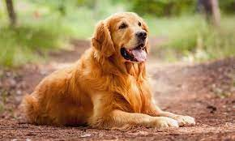

São Caes de grande porte, amáveis e muito brincalhões. O cachorro Golden Retriever possui um grande porte, é muito forte e peludo e seus olhos escuros transmitem a doçura de seu temperamento. Suas orelhinhas caídas e a semelhança de sua boca a um sorriso são características irresistíveis para quem ama pet. A raça é extremamente amável, muito companheira dos tutores e fica ainda mais alegre na presença de crianças. Se bem treinada, pode ser uma excelente companhia para gatos e outros animais. Certamente uma das principais características do Golden, que o torna um dos cães mais populares, é a sua alta sociabilidade e anseio por afeto. Pode-se dizer que foram feitos para a família e, por isso, precisam ficar junto a seu “bando humano”, dentro de casa, e pouco tempo sozinhos no quintal.
Os cães da raça Golden são muito ativos e robustos, sendo excelentes para atividades como cão-guia para cegos, ajudante de deficientes motores e guardião. Recomenda-se que pratiquem de 40 a 60 minutos de exercícios físicos diários, sejam caminhadas, corridas, brincadeiras ao ar livre ou jogos de buscar. A raça tem um instinto de trabalho e, por isso, precisa ter algo dinâmico para fazer. Sendo assim, outra possibilidade é treiná-los para obediência, colocá-los em aulas de agilidade ou realizar outras atividades físicas. Tudo isso é altamente estimulante para o físico e a mente desses peludos.
Goldens geralmente gostam de todos que entram em contato com ele e isso fica evidente em seus gestos. Seus saltos chegam a ser divertidos! Felizmente, se iniciar os treinamentos com o Golden Retriever filhote, ele rapidamente saberá como controlar essas emoções e ser ainda mais delicado. Vale ressaltar a importância de passar instruções desde cedo ao seu cãozinho de forma doce. Apesar de dificilmente serem cães de guarda, é essencial que o Golden adulto saiba controlar seus animados instintos para não assustarem outros animais e crianças e para que a socialização seja cada vez melhor.
Fizemos um gráfico nivelando de 0 a 5 as características da raça, veja a baixo!
Os Golden possuem uma estrutura musculosa e robusta, seus joelhos são bem angulares, os jarretes são bem retos, e as patinhas são arredondadas. A cabeça é larga, o focinho é largo e profundo, suas mandíbulas são fortes, seus olhos são escuros, bem afastados e transmitem um olhar doce, e suas orelhinhas são triangulares, de comprimento médio e caídas. Além disso, a espécie possui o rabinho inserido e portado no nível do dorso, sem curvatura na ponta. A pelagem pode ser lisa ou ondulada e bem franjada.
Os Golden não precisam de cuidados especiais como corte de pelos, somente a escovação que explicamos acima. Além disso, os Golden amam água e para evitar que o cloro ou sal façam mal à sua pele, lembre-se de, em seguida, dar um banho de água doce, removendo todas as impurezas. Manter os ouvidos protegidos e secos durante esses momentos de aventura também é parte essencial da higiene de cachorro. Para ficar ainda mais por dentro de tudo sobre Golden Retriever, é importante saber que todas as raças possuem predisposição a certas doenças devido a suas características morfológicas. No caso do Golden, catarata, atrofia progressiva da retina, displasia do cotovelo e displasia da anca são problemas comuns. Mas, com um bom acompanhamento veterinário e seguindo os cuidados necessários, seu pet continuará bem saudável e disposto como sempre.
Apesar de muito brincalhões, os Golden são muito inteligentes! Eles ocupam a 4ª posição no ranking de inteligência canina, composta por 79 raças, feito pelo norte americano Dr. Stanley Coren e por juízes americanos, especialistas em provas de obediência. O treinamento deve ser iniciado quando ainda são filhotes para facilitar o aprendizado. Como são cães que adoram água, é importante ensiná-los a só entrar em piscinas e lagos após o comando. Outra dica é familiarizá-lo a sons e barulhos de rua para que os passeios ou situações mais agitadas sejam tranquilas para ele. Você pode contratar um adestrador, mas é essencial que acompanhe o processo de perto para criar uma aliança com o peludo. Lembre-se de respeitar o espaço e temperamento do pet! Esse pode ser um processo demorado, mas que certamente terá um excelente resultado.